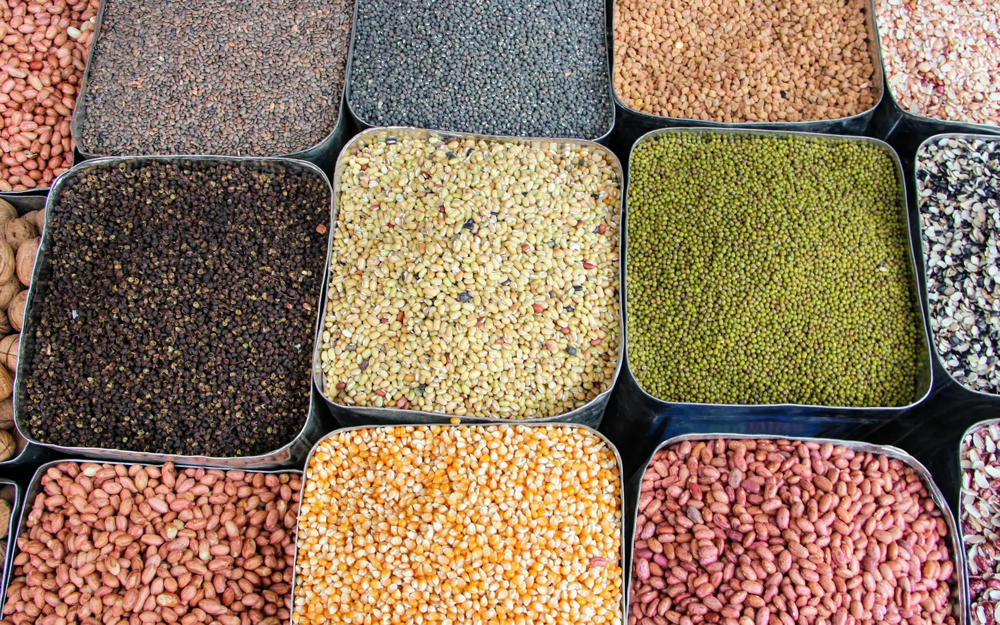

- Klinik beslenme · kurucuClinical nutrition · founder
- 7 dk okuma7 min read
İnsülin direnci için beslenme: işe yarayan 7 alışkanlıkEating for insulin resistance: 7 habits that work
İnsülin direnci bir diyet listesiyle değil, her gün tekrarlanan küçük alışkanlıklarla yönetilir. Klinikte en sık önerdiğimiz yedi adımı, nedenleriyle birlikte derledik.Insulin resistance isn’t managed with a diet sheet but with small habits repeated every day. Here are the seven steps we recommend most often in clinic, and why they work.

İnsülin direnci nedir?
İnsülin, kandaki glukozun hücrelere girmesini sağlayan hormondur. İnsülin direncinde hücreler bu hormona daha az yanıt verir; pankreas da kan şekerini dengede tutmak için daha fazla insülin salgılar. Uzun vadede bu durum prediyabet ve tip 2 diyabet riskini artırabilir.
Tanı ve takip hekiminizin işidir; açlık kan şekeri, HbA1c ve gerektiğinde yükleme testleriyle değerlendirilir. Beslenme ise tedavinin en güçlü destekçisidir.
Önemli
Metformin gibi ilaçlar kullanıyorsanız dozla ilgili kararları yalnızca hekiminiz verebilir. Beslenme değişiklikleri ilacın yerine geçmez.
1. Tabağın yarısını sebzeye ayırın
Nişastasız sebzeler (yeşillikler, kabak, brokoli, biber, patlıcan, domates) hacim ve lif sağlar, kan şekerini çok az etkiler. Tabağın yarısı sebze, dörtte biri protein, dörtte biri tam tahıl veya baklagil olacak şekilde kurulan tabak modeli, porsiyon saymadan denge kurmanın en kolay yolu.
2. Her öğüne protein ekleyin
Yumurta, yoğurt, peynir, balık, tavuk ya da baklagiller… Protein, karbonhidratın sindirimini yavaşlatır ve doygunluğu uzatır. Kahvaltıyı yalnızca simit, poğaça veya reçelli ekmekle geçirmek öğleden önce ani acıkmaya yol açar.
3. Rafine unu ve şekerli içecekleri azaltın
Beyaz ekmek, hamur işleri, meyve suyu, gazlı içecekler ve hazır soğuk çay kan şekerini hızla yükseltir. İçeceklerdeki şeker doygunluk hissi oluşturmadığı için en kolay gözden kaçan kaynaktır. Gün içindeki şekerli içecekleri su, maden suyu ya da şekersiz çayla değiştirmek bile fark yaratır.
4. Lifi artırın: bakliyat ve tam tahıl
Mercimek, nohut, kuru fasulye, bulgur, yulaf ve tam buğday ürünleri çözünür lif içerir. Çözünür lif sindirimi yavaşlatarak yemek sonrası kan şekeri yükselişini yumuşatır. Yetişkinler için günde 25–30 g lif hedeflenir; haftada 2–3 öğün bakliyat bu hedefe önemli katkı sağlar.
5. Öğün sırasına dikkat edin
Çalışmalar, aynı öğünde önce sebze ve proteini, sonra karbonhidratı yemenin yemek sonrası kan şekeri yükselişini azaltabildiğini gösteriyor. Pratikte salata ve ana yemekle başlayıp ekmeği ya da pilavı sona bırakmak uygulaması kolay bir yöntem.
6. Yemekten sonra 10–15 dakika yürüyün
Çalışan kaslar glukozu insülinden bağımsız olarak da kullanabilir. Özellikle akşam yemeğinden sonra yapılan kısa bir yürüyüş kan şekerinin daha dengeli seyretmesine yardımcı olur. Genel öneri haftada en az 150 dakika orta şiddette hareket ve 2 gün kuvvet egzersizidir.
7. Uykuyu ve stresi hafife almayın
Kısa ve bölünmüş uyku ertesi gün insülin duyarlılığını azaltabilir, iştah hormonlarını etkileyerek tatlı isteğini artırabilir. Düzenli uyku saatleri, beslenme planının başarısında sandığımızdan büyük rol oynar.
Yasak listeleri işe yarar mı?
Kesin yasak listeleri genellikle kısa sürede bırakılır. Meyve de ekmek de bir planın içinde yer alabilir; önemli olan porsiyon, öğündeki eşlikçiler ve sıklık. Örneğin meyveyi tek başına yemek yerine bir avuç çiğ badem ya da yoğurtla birlikte tüketmek daha dengeli bir etki yaratır.
Klinikte
İnsülin direnci için hazırladığımız planlarda tahlillerinizi, iş temponuzu ve sevdiğiniz yemekleri birlikte değerlendiriyor, üç ayda bir hekiminizin istediği tahlillerle planı güncelliyoruz.
What is insulin resistance?
Insulin is the hormone that lets glucose move from the blood into cells. With insulin resistance, cells respond less to it, so the pancreas releases more insulin to keep blood sugar steady. Over time this can raise the risk of prediabetes and type 2 diabetes.
Diagnosis and monitoring are your doctor’s job, using fasting glucose, HbA1c and, when needed, a glucose tolerance test. Nutrition is the strongest support for that treatment.
Important
If you take medication such as metformin, only your doctor can decide on doses. Changes to your diet do not replace medication.
1. Fill half your plate with vegetables
Non-starchy vegetables (leafy greens, courgette, broccoli, peppers, aubergine, tomatoes) add volume and fibre with very little effect on blood sugar. A plate that is half vegetables, a quarter protein and a quarter wholegrains or legumes is the easiest way to balance a meal without counting.
2. Add protein to every meal
Eggs, yogurt, cheese, fish, chicken or legumes: protein slows the digestion of carbohydrate and keeps you full for longer. A breakfast of just a simit, pastry or bread with jam often leads to sudden hunger before lunch.
3. Cut back on refined flour and sugary drinks
White bread, pastries, fruit juice, fizzy drinks and bottled iced tea raise blood sugar quickly. Sugar in drinks doesn’t make you feel full, which makes it the easiest source to overlook. Simply swapping sugary drinks for water, sparkling water or unsweetened tea makes a difference.
4. Eat more fibre: legumes and wholegrains
Lentils, chickpeas, beans, bulgur, oats and wholewheat products contain soluble fibre, which slows digestion and softens the rise in blood sugar after meals. Adults should aim for 25–30 g of fibre a day; 2–3 legume-based meals a week go a long way.
5. Mind the order you eat in
Studies show that eating vegetables and protein before carbohydrate in the same meal can reduce the rise in blood sugar afterwards. In practice: start with the salad and main dish, and leave the bread or rice until last.
6. Walk for 10–15 minutes after eating
Working muscles can use glucose independently of insulin. A short walk, especially after dinner, helps keep blood sugar steadier. The general recommendation is at least 150 minutes of moderate activity a week plus 2 days of strength training.
7. Don’t underestimate sleep and stress
Short or broken sleep can reduce insulin sensitivity the next day and affect appetite hormones, increasing cravings for sweets. Regular sleep plays a bigger part in the success of a nutrition plan than most people expect.
Do “forbidden food” lists work?
Strict lists are usually abandoned quickly. Fruit and bread can both fit into a plan; what matters is the portion, what you eat them with and how often. Eating fruit with a handful of raw almonds or some yogurt, for example, has a gentler effect than eating it alone.
In clinic
When we build a plan for insulin resistance, we look at your blood tests, work schedule and favourite foods together, and update the plan every three months with the tests your doctor requests.
Kaynaklar
- American Diabetes Association. Standards of Care in Diabetes—2025. Diabetes Care. 2025;48(Suppl 1).
- Shukla AP, et al. Food order has a significant impact on postprandial glucose and insulin levels. Diabetes Care. 2015;38(7):e98–e99.
- Reynolds A, et al. Carbohydrate quality and human health: a series of systematic reviews and meta-analyses. Lancet. 2019;393:434–445.
- Buffey AJ, et al. The acute effects of interrupting prolonged sitting time in adults with standing and light-intensity walking on biomarkers of cardiometabolic health. Sports Med. 2022;52:1765–1787.
- World Health Organization. WHO guidelines on physical activity and sedentary behaviour. 2020.